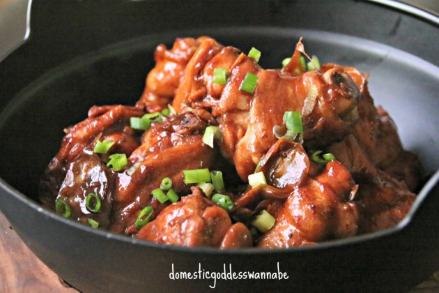

Sesame Oil Chicken

Description
The most aromatic and delicious braised chicken ever, with loads of sesame oil and ginger. A homey dinner in 20 mins.
Ingredients
- 1 chicken, chopped into bite-sized pieces (skin on)
- 1 piece ginger, about the size of your thumb, sliced
- 1 tablespoon garlic, minced
- 1/2 cup (120ml) sesame oil
- 2 tablespoons light soy
- 2 tablespoons dark soy (more if you prefer the sauce to be darker)
- 2 cups (480ml) water
- 1/4 tsp white pepper, grounded
To marinate chicken
- 4 tablespoons oyster sauce
- 3 tablespoons light soy
- 1 tablespoon sesame oil
- 1/4 teaspoon white pepper, grounded
Steps
- Start by marinating the chicken. While I believe that at most times, marinating the chicken for an hour or so improves its flavour, it really is a step that you can omit here if you do not have the time. I really do not think it makes that much difference to the end result in this case.
- In a heated wok, add sesame oil.
- Once the oil was hot, add the ginger and garlic. The oil will start bubbling. Fry the ginger and garlic for about 2-3 minutes.
- Add the chicken all at once. Stir to combine and added the soy sauces and the pepper.
- Add the water. You can either place everything into a slow cooker and cook on AUTO for about 4-6 hours, or continue cooking in the wok (stirring occasionally) with a lid on for about 15-20 minutes, or until the chicken is cooked through, and the sauce has thickened.
- Serve immediately with rice
Notes
If you do not marinate the chicken, then add the marinating ingredients to the sauce.